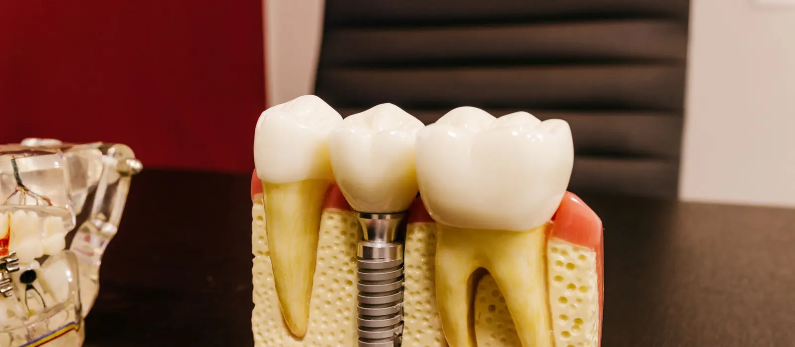
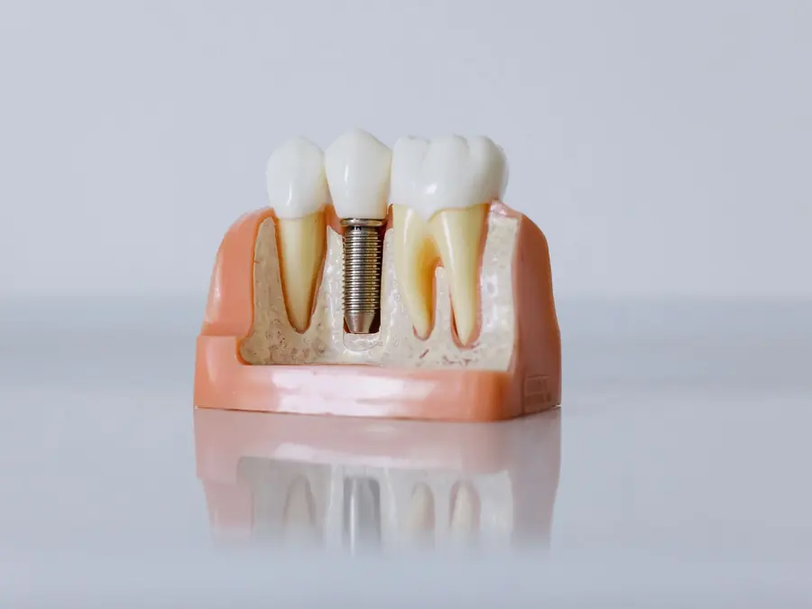

Implant Dentistry
Replaces a missing tooth with a titanium post in the jaw and a crown on top — without cutting down the healthy teeth on either side of the gap.
What a dental implant actually is
An implant replaces the root of a missing tooth, not just the visible part. It has three components. The fixture is a small titanium post placed into the jawbone where the root used to be. The abutment is the connector that sits at gum level. The crown is the tooth you see and chew with, made to match your own teeth in shape and shade.
What makes it work is a property of titanium: living bone grows directly onto its surface and bonds to it, a process called osseointegration. Over three to six months the implant stops being a screw sitting in a socket and becomes part of the jaw. That is why the healing time cannot be shortened by wanting it to be.
Why a gap is worth closing, even a back one
A missing tooth is not a stable situation. The teeth either side drift and tilt into the space, the tooth in the opposing jaw over-erupts because nothing meets it, and the bite changes shape over years. The tilted teeth become harder to clean, so decay and gum disease follow. Many people also start chewing on one side only, which loads that side and the jaw joint unevenly.
The bone changes too. Bone maintains itself in response to the load a tooth root passes into it; with the root gone, the ridge slowly shrinks in height and width. An implant is the only replacement that transmits chewing force into the bone the way a root did, which is why it slows that shrinkage where a bridge or a denture does not.
Implant, bridge or denture
None of the three is automatically right, and you will be shown all of them for your particular gap.
- An implant leaves the neighbouring teeth untouched, preserves bone, and is cleaned like a natural tooth. It costs the most, needs minor surgery, and takes months.
- A bridge is fixed and much quicker, but the teeth on either side must be cut down to crowns to carry it — a real cost if those teeth are healthy and unfilled.
- A denture is the least expensive and can replace several teeth at once, but it is removable, it rests on the gum, and it does not stop the ridge shrinking underneath it.
Who implants suit
The requirements are healthy gums, enough bone to hold the implant, and general health good enough to heal well. Uncontrolled diabetes, heavy smoking and untreated gum disease all reduce the odds, and all three are worth addressing before treatment rather than after. Where the ridge has already shrunk too far, bone grafting or a sinus lift can rebuild it first. Implants are not placed in children or teenagers until jaw growth has finished.
Whether your jaw has the bone for it is a measurement, not an opinion — it comes from an X-ray and a three-dimensional scan, and you will see it before anything is planned.
- Whole treatment
- 3–6 months, typically
- Placement appointment
- 30–60 min per implant
- Anaesthetic
- Local
- Back to work
- Usually the next day
What happens,
stage by stage
Implant treatment runs over months rather than one appointment. This is the whole sequence at Evara Dental Clinic.
-
Assessment, X-ray and 3D scan
The scan measures the height and width of bone at the site and shows exactly where the nerve canal runs in the lower jaw and where the sinus sits in the upper. Your medical history matters as much as the bone here: diabetes control, blood thinners, bone medication and smoking all change the plan.
-
The plan, in writing
How many implants, whether grafting is needed first, how long each stage takes, and what the whole thing costs including the crown. You take it away and decide. Nothing is booked on the day of the assessment.
-
Placing the implant
Under local anaesthetic the gum is opened, a channel is prepared to the planned depth and angle, and the titanium fixture is placed. The gum is closed with stitches. A single implant usually takes half an hour to an hour, and most people take a mild painkiller and are back at work the next day.
-
Healing and integration
Three to six months while bone grows onto the implant surface. A temporary tooth can be provided for a visible gap so you are not without a front tooth. This stage is the one that cannot be rushed — loading an implant before it has integrated is how implants are lost.
-
Abutment and scan
Once integration is confirmed, the connector is fitted at gum level and the site is scanned or an impression taken. Your bite is recorded at the same time, so the crown meets the opposing tooth the way the original did.
-
Fitting the crown
The crown is checked for shade, for its contact with the neighbouring teeth and for the bite, adjusted where needed, then fixed in place. From here you clean it like a natural tooth — including between the teeth, every day.
-
Reviews
The implant is checked at your routine visits: the gum around it, the bite, and the bone level on an X-ray from time to time. Problems around implants are silent early and treatable early, which is the whole point of looking.
Aftercare
The first week is about healing without disturbing the site. Everything after that is about keeping the gum around the implant healthy, for as long as you have it.

- On the day: bite gently on the gauze as instructed, do not rinse, spit or use a straw for the first 24 hours, and keep to cool, soft food. A cold compress on the cheek helps.
- Swelling and some bruising for two to three days is normal and usually peaks on the second day. Take the medication as prescribed, and finish the antibiotic course if you were given one.
- Do not smoke. Smoking around implant surgery reduces the blood supply that the healing bone depends on, and it is the single largest controllable risk of the implant failing.
- Keep brushing your other teeth normally and use the rinse you are given around the surgical site until it is healed.
- Long term, clean between the implant and its neighbours every day, with floss or an interdental brush. Implants cannot decay, but the gum and bone around them can be lost to peri-implantitis, and that is what ends most implants that fail late.
- Come for a review every six months, and wear a night guard if you grind your teeth — an implant has no ligament to cushion the load the way a natural tooth does.
What it costs
Implant treatment is quoted in full and in writing after the scan, with the surgical stage and the crown itemised separately, so you can see what you are paying for at each stage. There is no charge for changing your mind after the assessment.
What changes the price
How many implants are needed; whether bone grafting or a sinus lift has to be done first; which implant system is used; whether a temporary tooth is needed during healing; and the material of the final crown. A quotation given before a scan is a guess, and we would rather not give you one.
Dental implants: common questions
Does having an implant placed hurt?
It is done under local anaesthetic and is usually more comfortable than an extraction, because nothing has to be levered out. Most people describe pressure rather than pain. Afterwards there is soreness and swelling for two to three days, handled with ordinary prescribed pain relief.
How long does the whole treatment take?
Usually three to six months from placement to final crown, and most of that is healing rather than appointments. If the site needs bone grafting first, add several months. Anyone promising you a finished implant in a week is describing something else.
Am I too old for an implant?
Age by itself is not a barrier — general health, gum health and available bone matter much more. The limit is at the other end: implants are not placed in children or teenagers until jaw growth has finished, because the implant would not move as the jaw grew.
What if I do not have enough bone?
Bone shrinks after a tooth is lost, and the longer the gap has existed the more has gone. Where there is too little, bone grafting, or a sinus lift in the upper back jaw, can rebuild enough to place an implant safely. The 3D scan is what tells us — which is why the scan comes before any promises.
Can I have an implant if I smoke or have diabetes?
Often yes, but both change the odds and you deserve to hear that before deciding. Smoking reduces blood supply to healing bone and raises the failure rate measurably; stopping around the surgery helps. Well-controlled diabetes is not a barrier, while poorly controlled diabetes slows healing and raises infection risk, so it is worth getting it in range first.
Do implants decay, and how long do they last?
Neither the implant nor the crown can decay — neither is living tooth tissue. What they can get is gum disease around them, peri-implantitis, which eats away the bone holding the implant and is the main reason implants are lost years later. Implants last a long time when they are cleaned between the teeth daily and reviewed every six months.
Is an implant better than a bridge?
Not always. An implant leaves the neighbouring teeth untouched and preserves bone, but it costs more and takes months. A bridge is fixed and finished in weeks, but the teeth either side have to be cut down to crowns to carry it — which matters far more if those teeth are healthy than if they are already heavily filled. That is the honest trade-off, and it is the one you will be shown.
Related treatments
Root Canal Treatment
Before replacing a tooth, it is worth knowing whether it can still be saved.
Read more →Teeth Cleaning
Healthy gums are a precondition for implant treatment, and for keeping the implant afterwards.
Read more →Dentures & Bridges
The other ways of replacing missing teeth, and when each of them is the better answer.
See all treatments →Book an implant assessment
Sector 18, Kharghar. You will see the scan, hear all the options, and take the plan home before deciding.